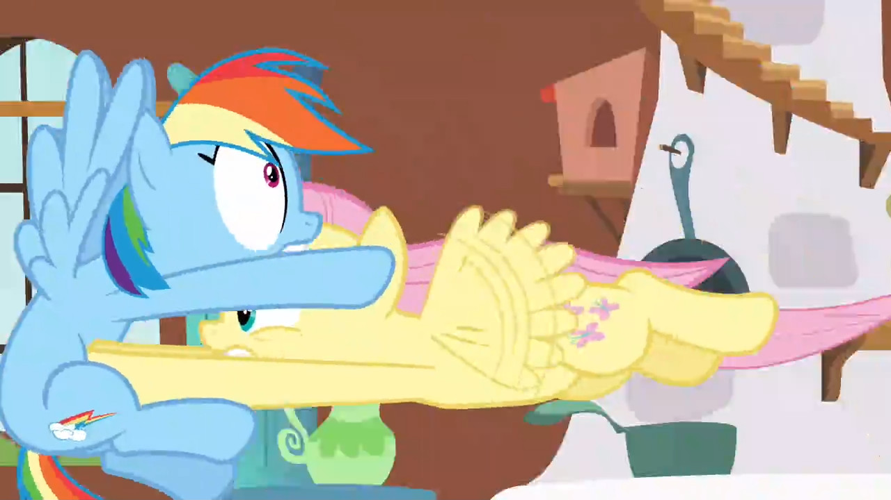
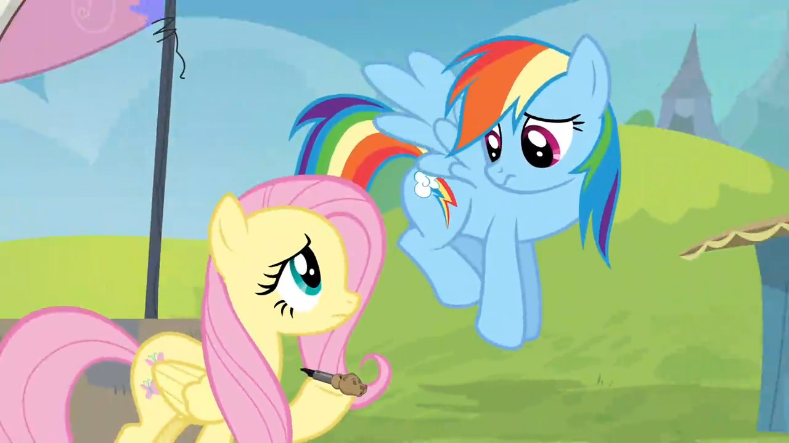

Hello everypony, and welcome to FlutterDash Factor!
The main goal of FlutterDash Factor (or FDF for short) is to provide an episode-by-episode breakdown of interactions between Rainbow Dash and Fluttershy, from the TV show, My Little Pony: Friendship is Magic. Along with facts and events from the show, it will also provide possible interpretations of these facts, which will be clearly separated from everything else. Obviously the interpretations will have a bias towards putting Rainbow Dash and Fluttershy together, but these interpretations will never be intermingled with the facts. You can decide for yourself.
Introduction
By far one of the most common character pairings on MLP:FiM is Rainbow Dash and Fluttershy. Generally the six main characters of the show are all thought to be "best buddies" with each other, and the episodes tend to revolve around that sort of dynamic. However, over time it has become pretty clear that the creators and writers of the show tend to put more weight and emphasis on certain pairings than others.
At the very least, FDF will only provide interpretations that suggest a closer bond between RD and Fluttershy than the others. Whether this should be interpreted as platonic or romantic is an entirely different topic and is best left to the reader.
Episodes
S1E16: Sonic Rainboom
In the episode's opening, Rainbow Dash is seen teaching Fluttershy the elements of a good cheer. When Fluttershy is unable to cheer loudly enough, Rainbow encourages her to yell louder.
The fact that Rainbow Dash would bother teaching Fluttershy to cheer in the first place shows that she wants to make her a more assertive pony. RD encourages Fluttershy to be better than she is.
As Rainbow and Fluttershy are flying towards Cloudsdale, Rainbow implores her, directly, to be more assertive.
Once again, Rainbow is trying to make Fluttershy a better pony. And if it were just for the sake of cheering her on, she probably wouldn't bother so much compared to any of the other five.
When Rainbow is finally able to pull off a Sonic Rainboom, Fluttershy starts hopping up and down joyously while cheering more loudly than she's done before.
In any other context this kind of cheering would seem out of character for Fluttershy, but it's very much understandable given the extenuating circumstances in the episode. But besides that, Fluttershy is the only one flipping out, while the other three are simply gawking in astonishment.
S1E23: Cutie Mark Chronicles
When the CMC go around town and find out the cutie mark stories of the Mane 6, they come across Fluttershy. She mentions that Rainbow Dash stood up to bullies who were making fun of her at Summer Flight Camp. It is also implied that Fluttershy and Rainbow Dash knew each other and were perhaps friends since they were fillies.
While it's not unreasonable to think that Rainbow Dash could have stood up for any of her friends, there's also the fact that the three bullies in Flight Camp were likely there from the start. They've probably bullied others before. We have no idea at this point if Rainbow Dash ever stood up to them off-screen (until later in season 5), but for the moment it's clear that Rainbow cares about Fluttershy enough to go through the effort of winning a race just to defend her honor. It would have been enough for her just to tell them off, but Rainbow went the extra mile.
S2E07: May the Best Pet Win!
When Rainbow Dash mentions that she's considering adopting a pet, Fluttershy excitedly tells her that she has a lot of choices at her home.
Fluttershy doesn't typically get this excited about anything, which we've seen in Sonic Rainboom. It's only when Rainbow does something that she doesn't expect, like perform a Sonic Rainboom, or show interest in wanting a pet, that she breaks out of her normally calm demeanor. She also never gets this excited for what any of the other five do.
Fluttershy and Rainbow Dash break into a duet that has them figuring out the perfect pet for RD.
Nose boops happen every so often with others, but it's still a subtle sign of a close bond between two ponies. But ignoring that, at the beginning of the song we have Fluttershy singing "Rainbow my dear, I cannot express my deliiight". This is the only time in the show that this happens, but Fluttershy specifically calls her "my dear". Another sign of closeness. You could argue that Fluttershy would call anypony such a thing, but as of yet it hasn't happened to anypony except Rainbow.
Fluttershy and Rainbow Dash continue on with their duet, with Rainbow increasingly wanting a pet who can fly and keep up with her speed.
Besides the obvious hoof around Rainbow's shoulders, there is also Fluttershy's insistence at finding Rainbow a pet. Rainbow even shows signs of giving up and walking away, but Fluttershy insists and keeps looking for more options.
S2E10: Secret of my Excess
As Rarity and Spike start plummeting towards the ground, Rainbow jumps into action and specifically drags along Fluttershy to help.
It is clear from Fluttershy's expression that she's very reluctant to do this, but Rainbow drags her along anyway. She could have called upon any other pegasus in Ponyville to help out, one that wasn't so shy and reserved, but she didn't. This is but one example of Rainbow pushing Fluttershy to be more than she is.
As Rainbow and Fluttershy are rushing towards Rarity and Spike, Fluttershy is barely registering what's going on, but soon accepts it.
As soon as Fluttershy realises what's going on, she gives a sheepish expression to Rainbow, to which she responds with a glare. Rainbow doesn't like to stand for Fluttershy's meekness in times when there are bigger issues at hand. But even knowing how meek Fluttershy is, Rainbow still went along with this plan because she believed that Fluttershy was capable of helping out.
S2E15: The Super Speedy Cider Squeezy 6000
At the beginning of the episode, Rainbow Dash crashes into Fluttershy's cottage and starts frantically alterting her to the start of cider season.
Fluttershy has no emotional investment in cider season like Rainbow Dash does. She's not even aware of any problems. But Rainbow sepcifically flies into her cottage just to get her out of bed, for seemingly no reason. She could have pulled away any other pony in the town, but she picked Fluttershy, likely because she's the closest to her and knew that Fluttershy would listen and not object.
Additionally, we see another example of Rainbow not caring much for Fluttershy's meekness after she pulls the blanket off.
Rainbow Dash forces Fluttershy out of her home and starts telling her how Pinkie Pie takes over every cider season.
Fluttershy, even if she listens to Rainbow's problems, doesn't actually care for her problem in the same way. She's almost apathetic about it, but of course goes along with it because they're close friends.
And of course there's the position of Rainbow's hoof, there. Careful where you place that, RD!
S2E21: Dragon Quest
Rainbow Dash is seen attempting to drag Fluttershy out of her cottage in order to see the dragon migration.
Fluttershy's dragon phobia is prominently shown in the Dragonshy episode, and everypony is aware of it. Despite that, Rainbow tries to force her out of her cottage because she believes that she can get over her fear.
Despite Rainbow Dash's and Twilight's efforts, Fluttershy continues to subbornly refuse to attend the dragon migration out of her fear of dragons.
Even with Fluttershy continuously refusing to attend, Rainbow Dash refuses to give up. Any other of the Mane 6 wouldn't try to push Fluttershy so much to do something that she obviously doesn't want to do, and Rainbow is only doing it because she thinks Fluttershy can be better than that.
Rainbow Dash mentions to Fluttershy that she had previously dragged Rainbow along to see a butterfly migration, believing that Fluttershy should now see the dragon migration in return.
The fact that Rainbow agreed to attend the butterfly migration with Fluttershy suggests that their bond is close enough that they would humor each other's interests, however different they might be, just to keep the other pony happy.

Fluttershy actively rebels against Rainbow Dash's request, knocking her down and leaping out of the cottage in the opposite direction. Rainbow Dash lets her go.
Even Rainbow Dash knows when to give up. As much as she wanted Fluttershy to go, there's only so much she could do with such resistance. Even still, Rainbow doesn't get mad at her.
S2E22: Hurricane Fluttershy
Rainbow Dash sees through Fluttershy's disguise as a tree and pushes her to the pegasi meeting in the library.
Rainbow Dash knows Fluttershy well enough to notice that she's disguised as a tree. Not wanting her to be so scared of tornado duty, she pushes her to go since nopony else will.
Not fooled by Fluttershy's fake illness, Rainbow Dash dumps cold water on her to "cure" her.
Even though Fluttershy is technically trying to lie, Rainbow doesn't take offense to it and instead reveals the farce because she wants Fluttershy to do what she needs to do. She understands that Fluttershy is just scared rather than a liar.
After revealing Fluttershy's "illness", Rainbow asks her what's really going on.
There is a notable tone shift in Rainbow's voice when she asks Fluttershy's what's going on. It turns into the tone of a concerned friend, and it's a softer tone that Rainbow knows she needs to adopt when talking to Fluttershy specifically.
After Fluttershy tells her story of her peers making fun of her at Flight Camp, Rainbow Dash initially takes a harsh tone afterwards, but then corrects herself.
Rainbow knows that Fluttershy is a softie and changes her tone mid-conversation to match it. It's a profound moment that signifies just how much Rainbow knows and cares about Fluttershy and how sensitive she is.
After Fluttershy initially refuses to do tornado duty, Rainbow starts to fly away dejected. Fluttershy then has a change of heart and decides to go through with it.
As soon as Rainbow starts to fly away in defeat, Fluttershy appears concerned. Her change of heart shows that she knows how much this means to Rainbow, so she goes through with tornado duty despite her own reluctance.
When Fluttershy first attempts to measure her wing speed, it turns out to be exceptionally low.
Both Twilight and Rainbow don't want to tell her the truth about her wing speed, but Rainbow is the one who speaks up. She knows that Fluttershy would take it the wrong way if the wing speed were too low, and specifically said "point five" to make it seem larger than it was, in order to spare her feelings.
After Fluttershy runs away, Rainbow tries to comfort her, but ends up unsuccessful.
Rainbow's attempts to comfort Fluttershy are in vain at this point. But it's clear how much she cares about her. In this snapshot Rainbow is very clearly concerned and wants to chase after her, but knows that she needs time to herself. Still, she's disappointed and saddened that Fluttershy is so distressed.
After Fluttershy goes through some tough training, she returns to remeasure her wing speed.
Rainbow is clearly very glad that Fluttershy came back on her own. You can see a mix of surprise and delight on her face.
Rainbow Dash tries, futily, to reassure Fluttershy that even a small amount of wingpower will make a difference.
Rainbow would never accept anything but the best from herself, but despite that she tries to reassure Fluttershy that it doesn't matter so much that her wingpower doesn't match everypony else's. She still wants her to shine, even if just a little.
Rainbow Dash appears concerned about Fluttershy separately from the impending tornado duty.
Spike mentions (tactlessly) that they would still have plenty of wingpower to lift water to Cloudsdale even without Fluttershy. But that doesn't matter to Rainbow Dash right now; all that matters to her is that Fluttershy is in a funk that she's having trouble overcoming, and wishes that she could do something about it.
After the success of tornado duty, Rainbow Dash notices Fluttershy still going and stops her with a cloud, and then congratuates her.
Obviously a hug can be shared between nearly anypony, but this one was built up throughout the episode. A simple thing, but it shows how much Rainbow cares and appreciates what Fluttershy was able to do.
After Spitfire congratulates Rainbow Dash on a job well done, Rainbow instead transfers credit to Fluttershy.
Rainbow Dash has always liked to hog the spotlight, but she cares enough about Fluttershy that she's willing to give all the credit and attention to her.
S3E10: Keep Calm and Flutter On
For the first time in the series, Fluttershy gives Rainbow Dash the nickname, "Dashie", saying it in casual conversation.
These sorts of "pet names" are typically reserved for closer friends. None of the other Mane 6 call her Dashie, except for Pinkie Pie (who is bubbly and affectionate towards everypony). Rainbow Dash makes no objection to being called this name from Fluttershy, despite it being a cutesy and arguably uncool name.
As Discord teases the other five at the tea party, Rainbow Dash steps up and tries to convince Fluttershy that Discord is manipulating her.
While this technically could have happened with any of the other five, Rainbow Dash is the one who decided to speak up and convince Fluttershy to not trust Discord. Rainbow cares enough that she doesn't want to see Discord taking advantage of Fluttershy's kind nature.
S4E04: Daring Don't
Excited about the upcoming Daring Do book, Rainbow Dash shares her enthusiasm with Fluttershy and asks if she's excited too.
Similar to Super Speedy Cider Squeezy 6000, Rainbow first goes to Fluttershy to share her excitement about a Daring Do book coming in four months, even though Fluttershy isn't as nearly as big of a fan as she is. And, as another parallel to the aformentioned episode, Fluttershy doesn't even know why she should be excited at first. Yet another example of a closer bond between the two since Rainbow could have talked to any other pony.
S4E22: Trade Ya

After stating that the hardcover first edition of a Daring Do can only be found at this exchange, Fluttershy offers to help, putting her own interest in Traders' Exchange aside.
Although all of the other five appeared concerned, Fluttershy is the one who stepped up to help Rainbow Dash, while sacrificing her own potential enjoyment of the Exchange. This indicates a bond deep enough that Fluttershy is willing to make Rainbow happy despite herself.
Fluttershy speaks on behalf of Rainbow when she becomes mildly distraight at the thought of not getting the Daring Do book.
This is shown a few times throughout the episode, but Fluttershy and Rainbow often share the same emotions and reactions to the events of the Traders' Exchange. Here, Fluttershy looks over and emphathizes with Rainbow's plight, prompting her to speak up.
Rainbow Dash and Fluttershy scream in unison after their the crystal chalice disintegrates.
Even though Fluttershy isn't as nearly as interested in the ultimate goal of the Daring Do book, she's still invested enough in Rainbow Dash in order to share in the emotion of seeing an essential item fall to pieces.
Fluttershy attempts to prevent a trade, but her shyness makes her back away. Rainbow Dash notices and decides to fly back.
Although Rainbow Dash obviously gets frustrated at this, she doesn't get mad. She knows Fluttershy well enough that getting mad isn't the answer. Instead, she compromises.
After flying down and telling the guy to "beat it", she switches places with Fluttershy.
Rainbow Dash is only frustrated for a brief moment before calmly telling Fluttershy to go find out what kind of chicken to get. She respects Fluttershy's limited ability to respond to hostility and instead just makes a compromise without causing any fuss.
Rainbow Dash and Fluttershy team up in order to speed through the burger stand line.
Here, it is shown that Rainbow Dash and Fluttershy can work well as a team, accomplishing a task towards a shared goal.
After using her bear call to clear the crowd in front of the booth holding the Daring Do book, she drops it as Rainbow drags her and the Orthros to the booth.
Fluttershy outright states that Rainbow Dash is far more valuable to her than a bear call. While this would be true of any two good friends, it still shows how Fluttershy was willing to sacrifice her own interest in the Exchange for the purpose of making Rainbow happy.
As Rainbow is distracted with the Daring Do book, she ends up giving away Fluttershy into extended Orthros training.
Often times Fluttershy can be kind of a fault. She likes Rainbow enough that she would be willing to be away from Ponyville for "who knows how long" just so Rainbow can get what she wants. This is a kind of sacrifice that few ponies would be willing to make, even for a friend.
After realizing what she just did, Rainbow Dash instantly feels regret for her decision.
As much as Rainbow wants her first edition Daring Do book, she knows that it could never be more valuable than a friend, especially when it comes to Fluttershy.
Rainbow Dash asks Twilight to judge the trade she just made for the Daring Do book.
Even after Twilight says that the trade was technically fair, Rainbow admits that she was wrong, relaying the value of a friend. Fluttershy smiles at this.
After convincing the other mare to call off the trade, Rainbow Dash and Fluttershy go into a hug.
Rainbow hugs Fluttershy rather enthusiastically. They're both quite glad to be with each other again.
Rainbow Dash relays the lesson the episode, saying that giving up something you want for a friend is one of the best things you can do.
As Rainbow winks over at Fluttershy, she smiles back at her. A simple gesture between friends, but a smile like that tends to be quite telling when it comes to level of respect and appreciation.
Twilight hands Rainbow Dash her paperback copy of the previously sought Daring Do book. She starts reading it to her friends.
As Rainbow says "friends", she hugs Fluttershy and nopony else. This could be due to their proximity to each other, but typically the Mane 6 go for group hugs. Not this time.
S5E05: Tanks for the Memories
Knowing that Rainbow Dash won't get over Tank having to hibernate until she lets out her emotions, Fluttershy tells her plainly and bluntly that she'll have to spend Winter without her pet.
Fluttershy shows some tough love towards Rainbow Dash. She knows Rainbow to the point where she knows she can take such an approach without her getting offended by it. None of the other four think of this approach, and it's something Fluttershy would typically avoid with any other pony.
After letting Rainbow cry for some time, Fluttershy interjects after Rainbow appears to calm down.
Even after a display of tough love, Fluttershy, of course, isn't cruel. She follows up and sees if Rainbow is okay.
As Rainbow continues to cry, Fluttershy goes in and comforts her with a cuddle.
While the interpretation should be obvious, I'll go ahead regardless. This would be the first time in the series where we see Fluttershy and Rainbow this close to each other. Granted, while comforting a distraught friend in this manner isn't indicative of something unique between these two, it's something that the other four could have done already by this point. But Fluttershy is the one who knows that Rainbow wouldn't object to this. Rarity later goes in only because Fluttershy starts crying, and Pinkie because Twilight is an emotionless robot.
Also, I'm pretty sure I have diabetes at this point.
S5E25: The Cutie Re-mark, Part 1
"But... who in tarnation is Pinkiebow and FlutterDash?"
'nuff said.
S6E02: The Crystalling, Part 2
Applejack, Fluttershy, and Rainbow Dash try to convince the citizens of the Crystal Empire to stay inside. Rainbow states that she's pretty sure the Crystalling isn't happening, and after the citizens get excited for what they think is a fireworks show, Rainbow lowers to the ground in defeat.
Right after Rainbow Dash lowers to the ground, defeated by the citizens' stubborness, Fluttershy consoles her by petting her mane, to which Rainbow Dash does not object. Rainbow Dash is not known to be a particularly affectionate pony, though this has changed over the seasons. In any case, Fluttershy's instinct to pet her shows a deeper bond since she has not shown that kind of affection for the others.
S6E07: Newbie Dash
A flashback scene taking place at Flight Camp shows the origin of the nickname "Rainbow Crash." Rainbow Dash misperforms a stunt and ends up crashing into a garbage can, prompting most of her audience to laugh at her. Fluttershy is seen in the background not joining in on the laughter.
The fact that Fluttershy does not join in on making fun of Rainbow is perhaps an indication that they were already friends. It can also simply be an expression of Fluttershy's character; she's not one to make fun of others, especially since others have made fun of her as well. Either way, this would be a good sign for friendship between the two, and would serve as common ground.
S6E08: A Hearth's Warming Tail
Rainbow Dash and Fluttershy sing together on a small part of the introduction song as they share an overlooking cloud.
It's important to note that any two pegasi could have handled the clouds over Twilight's castle, but Rainbow and Fluttershy specifically decided to do it together. Moreover, they share a cloud as they complete their work. They are quite clearly comfortable around each other.
S6E11: Flutter Brutter
Fluttershy and Rainbow Dash are invited over for lunch at the home of Fluttershy's parents.
Up until now, we've not heard anything about Fluttershy's family, but the fact that they invited Rainbow Dash suggests that she has perhaps been there before. This is further suggested by Rainbow Dash when she mentions that she likes to be some place quiet after being busy with the Wonderbolts. Then, a little later in the scene, Rainbow relays a memory of Zephyr Breeze that had taken place before the events of the episode.
Rainbow Dash appears uninterested as Zephyr Breeze sits next to him and relays his experiences in mane therapy training.
Throughout the episode, Zephyr keeps suggesting that Rainbow has some kind of crush on him, but she does not reciporicate or entertain this thought, and instead immediately vents to Fluttershy as she walks in. This shows that Rainbow is more willing to be open with her than with Zephyr.
Rainbow Dash points out plainly to Fluttershy that she has been quieter than usual.
Rainbow Dash knows Fluttershy well enough that she knows how quiet she should be, and expresses concern when things seem off. This also gives off the suggestion that they do indeed keep each other company pretty regularly, which is further shown by the fact that they're still together here even after leaving her house.
After Fluttershy points out that she's "peeved" at the situation with her brother, Rainbow Dash relays the story to Applejack and Pinkie Pie.
Rainbow Dash gets some mild entertainment from hearing Fluttershy swear (at least, what is considered a swear in Equestria). Applejack asks if Zephyr is having another one of his "extended stays", which means that this has happened before, and that Rainbow Dash is all too familiar with it. This provides further implication that Rainbow has spent a lot of time around Fluttershy and her family.
After standing up for her parents and convincing them to make their son move out, Fluttershy and Rainbow Dash have a brief talk about it in Fluttershy's cottage before Zephyr appears at her doorstep.
Yet again, Rainbow Dash is seen hanging around Fluttershy while also showing concern for her family issues. Typically, according to Rainbow Dash's character, this sort of stuff would bore her and drive her away, but she is clearly invested in Fluttershy and her family, and is willing to go through these hurdles with her (at least until Zephyr tries to flirt again).
After Zephyr fails to complete two different jobs, Rainbow Dash lays out her plan for a job at Wonderbolts Headquarters. She gives a frustrated sigh as Zephyr interprets this as a way for Rainbow to spend more time with him.
Both Rainbow Dash and Fluttershy express disapproval as Zephyr makes his off-handed remarks towards Rainbow. By this point it can be perhaps reasonably assumed that Rainbow and Fluttershy are closer to each other than either of them with Zephyr.
Fluttershy becomes a bit depressed after having to kick her brother out of her house. Rainbow Dash tries to reassure her that she did the right thing.
Yet again, Rainbow Dash sticks around to give Fluttershy some encouragement in her decisions. Throughout the show, Rainbow has never shown this level of concern for family issues with anypony else. Moreover, it's pretty clear that she wants to see Fluttershy happy whenever she can help it.
After hearing about Zephyr attempting to live without a home, Fluttershy and Rainbow Dash go off to see how he's doing. They both agree that they should intervene.
While it's a bit obvious that Fluttershy would step in to get her brother back on his hooves, it's a little less obvious that Rainbow Dash would continue to be by her side and help her with such a personal issue. Rainbow Dash is committed to see this to the end.
Fluttershy and Rainbow Dash go into a musical number about overcoming hurdles by perseverance.
Fluttershy and Rainbow work together to give Zephyr a bit of encouragment in trying to actually finish something as an important first step in conquering his fear of failure. It's pretty clear that Rainbow and Fluttershy have worked well together in getting through this ordeal.
Fluttershy and Rainbow Dash reinforce the lesson of perseverance through the song.
In this particular scene, there is a bit of subtle imagery/symbolism going on. The spotlight is on Fluttershy as she mentions and expresses that everypony has a time when they doubt themselves. This could perhaps be a subtle callback to Hurricane Fluttershy, an episode where Fluttershy had to go through her own struggles in self-doubt.
Meanwhile, Rainbow Dash appears and gives a wink as she mentions that you can work out your problems if you give it your all. This, too, resembles what happened in Hurricane Fluttershy, which is also where Rainbow Dash was heavily involved in Fluttershy's struggle. Fluttershy is seen in the spotlight giving what is perhaps a knowing smile.
Fluttershy's parents suggest that they believe that Rainbow Dash must feel good after pining for Zephyr all this time. Rainbow Dash appears taken aback, and is about to say something before Fluttershy interjects.
This would seem like an important point for Rainbow Dash to clear up with Fluttershy's parents, but decides not to as Fluttershy interrupts. This can be taken a number of ways, the most innocent being that Rainbow Dash doesn't want to interrupt the new line of conversation made by Fluttershy.
Another interpretation is that Rainbow Dash sees this as a bit of a complex and/or conflicting issue for one reason or another. I'll leave that for the reader to decide.
Omissions
Some episodes of the show containing Rainbow Dash and Fluttershy together have been purposefully omitted for various reasons, which are explained below for each episode.
S2E11: Hearth's Warming Eve
The Mane 6 are chosen to put on a play depicting the founding of Equestria. Rainbow Dash and Fluttershy play the parts of Commander Hurricane and Private Pansy, respectively. This isn't quite considered FlutterDash interaction because, for one, they were playing characters. Second, out of the Mane 6 they are the only two pegasi. There were no other characters who could have played their parts.
S2E26: A Canterlot Wedding, Part 2
The fight sequence in this episode contains a scene where Rainbow Dash fights off some changelings and helps Fluttershy up from the ground. Because of the way in which their faces get close to each other, as well as the faint sound effect that plays when this happens, some people have interpreted this as a cleverly hidden kiss.
It's more likely that there's nothing special going in in this scene. A ton of freeze frames in the show can be taken out of context and be made to look like something they're not.